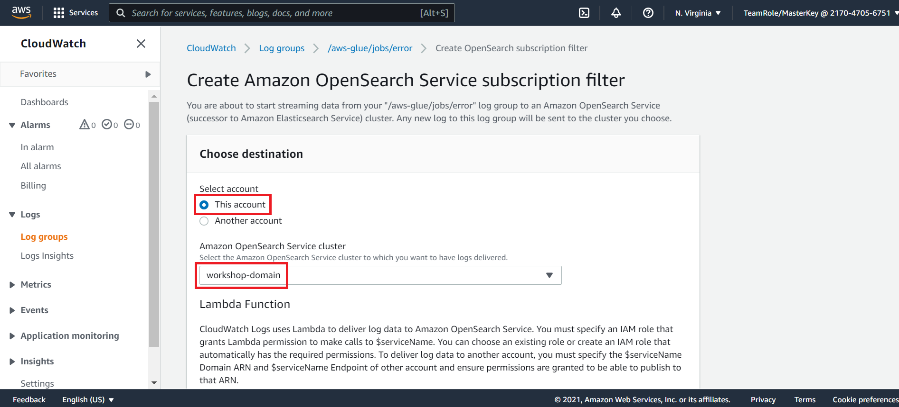
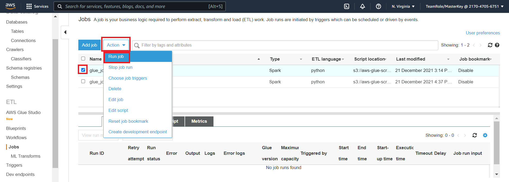
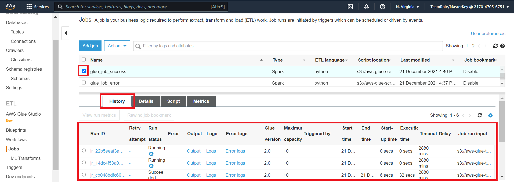

3. Send Log Data to OpenSearch
We have now created an OpenSearch domain, configured the required IAM and OpenSearch permissions and we created two Glue jobs that we can run to produce logs.
All of the log information for the Glue jobs is collected in CloudWatch. Lets set up Lambda functions that will – in real time – send the CloudWatch log data to OpenSearch
We can complete this in the following steps
- Set up CloudWatch to OpenSearch Lambda Function(s)
- Re-run the Glue Jobs to Create additional CloudWatch Logs
Set up CloudWatch to OpenSearch Lambda Function(s)
- Navigate to the CloudWatch Console
- On the left hand menu click on Log groups

On the log groups page of CloudWatch you should see a few log groups which begin with /aws-glue/

- Click on the log group aws-glue/jobs/error
- Click on the Subscription filters tab
- Click on the Create drop down
- Click on the Create Amazon OpenSearch Service subscription filter

- On the Create Amazon OpenSearch Service subscription filter page, under the choose destination click on This account
- From the drop down select the workshop-domain

- Under the Lambda Function section select the IAM role
workshop-rolethat we created earlier

- Under the configure log format and filters select JSON
- For the subscription filter pattern enter
" " - For the subscription filter name
all log

- Click on Start streaming

The steps you just completed created a lambda function that will send CloudWatch logs to OpenSearch in real time.
Now that we have completed this process for the /aws-glue/jobs/error log group Navigate back to the CloudWatch Console and repeat steps 1 - 13 for log groups /aws-glue/jobs/logs-v2 and /aws-glue/jobs/output
Re-run the Glue Jobs to Create additional CloudWatch Logs
- Go to the Glue Console
- On the left hand menu click on Jobs

- Click on the check box next to the
glue_job_successjob - Click on the Action drop down
- Click on the Run job button

Repeat step 3 - 4 for of the jobs you created earlier ie. glue_job_success and glue_job_error. Run each job a few times. The goal is to generate some CloudWatch logs that will be sent to OpenSearch.
You can view the job run history for a job by click on the check box next to job name and viewing the history tab

Ensure that you have at least 3 runs completed for each job. The job status for the glue_job_success should be Succeeded and the job status for the glue_job_error should be Failed
When you have at least 3 completed job runs for each job begin the next step Search Logs